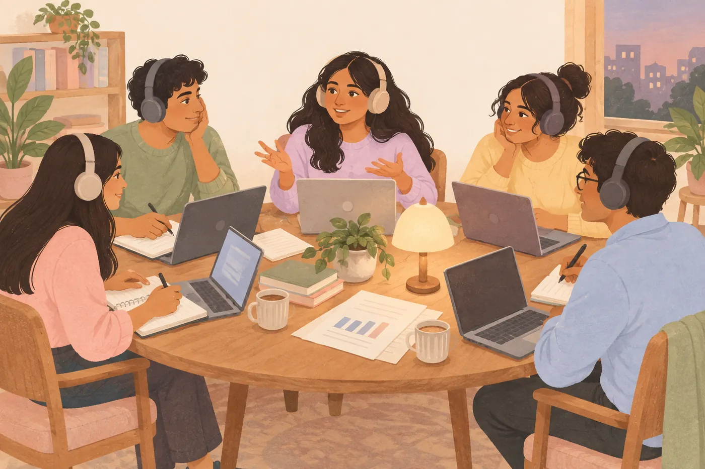
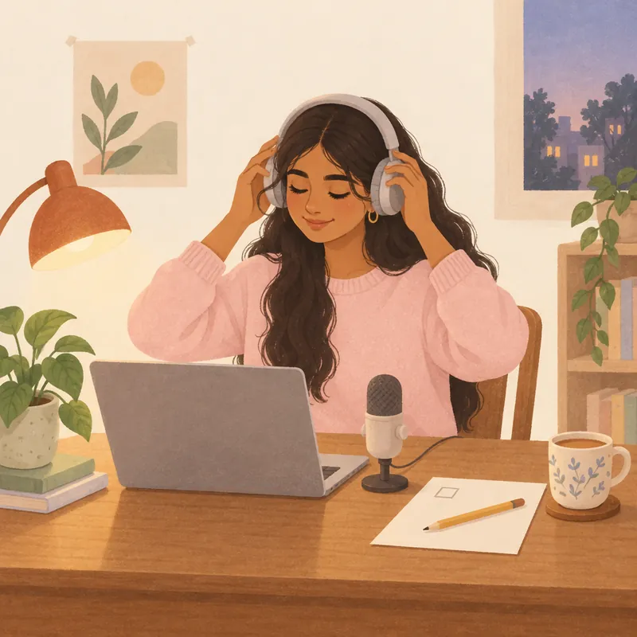
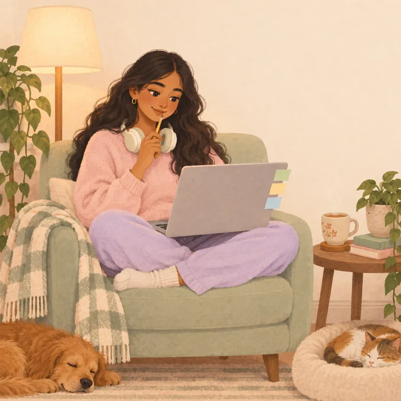

Every piece of feedback quotes something you said.
Each point shows your exact words and when you said them. If a line can't be traced to one person, it is left out.
A student concept you can click through
Four to six classmates join one room, read the same case and agree on one answer. Afterwards, each of you gets a private report that quotes what you said and when you said it.
Click through every screen. There's no sign-up, and everything here is sample data.

How a session works
Open the invite, see what gets recorded, say yes, and pick the name others will see.
S1CP1Everyone reads the same case and exhibits, so you are all working on one problem.
CP2Each person's voice is recorded separately, so every line has one clear speaker.
CP3First a transcript that shows who said what, then feedback that quotes your own lines with their times.
CP4CP5CEOur promises
Every piece of feedback quotes something you said.
Each point shows your exact words and when you said them. If a line can't be traced to one person, it is left out.
You see how long you spoke. There is no target.
It is there so you know, not to push you to talk more. Nobody gets hints during the discussion.
Your report stays yours.
Recruiters never see it, and PeerLens does not score or rank anyone. It is practice feedback, just for you.
For reviewers
Features from our Kano survey get added once we know which ones fit the MVP.
Everyone in the room reads the same pages.
Margin, orders per store, basket size and delivery cost, metro against tier-2.
Before you join S1
India's data protection law (the DPDP Act, 2023) asks us to get your consent first. Read the full privacy and cookie notice.

Say a few words. The bars should move.
Headphones stop other voices getting into your mic, so every line in the transcript belongs to the right person.
Room KK-07 joined as You Sample data
Kirana Konnect delivers groceries in under 20 minutes from 140 dark stores across six metro cities. For the last six months it has also run one pilot store in Indore.
Metro order growth has slowed, and the board has money for one big push next year. It can open dark stores in tier-2 cities, or stay in the metros and add stores and categories there.
Your goal this time: Back every challenge with one number from the case.
| Year | Orders (crore) | Growth |
|---|---|---|
| FY24 | 3.1 | n/a |
| FY25 | 3.9 | 26% |
| FY26 | 4.3 | 10% |
| Measure | Metro | Tier-2 (Indore pilot) |
|---|---|---|
| Contribution margin per order | 7.5% | 3.5% |
| Orders per store per day | 1,180 | 520 |
| Average order value | ₹480 | ₹360 |
| Delivery cost per order | ₹34 | ₹29 |
Shared case pack CP2: the same pages for everyone in the room. Sample case: the company and its figures are fictional.
14:22 left in Discuss
A 30-minute session: 5 minutes to read, 20 to discuss, 5 to decide.ReadDiscussDecide
Recording. Everyone is on their own mic.
After the session CP4CP5
Room KK-07 Kirana Konnect Fri 23 Oct 2026 CP4 Sample data
Shall we start with what the board actually has to choose? Tier-2 launch or a deeper metro play, and one recommendation by the end.
I'd frame it on returns. Exhibit 2 says the tier-2 margin per order is 3.5%, against 7.5% in the metros.
And orders per store are less than half. 520 a day against 1,180.
But growth matters too. Metro orders grew 26% two years ago and only 10% last year, per exhibit 1.
So the metro case is slowing and the tier-2 case is thin on margin. We need to know which gap closes faster.
Agreed. Can we list what would have to be true for tier-2 to work?
Density. A dark store only works if the riders are busy.
And basket size. The average order is ₹360 in tier-2 against ₹480.
Delivery is cheaper there though. ₹29 against ₹34.
That saves five rupees an order, but the basket is 120 rupees smaller. The basket gap matters more.
Then going deeper in the metros could mean adding categories to lift the basket, not just more stores.
If tier-2 margins are 4 points lower, as exhibit 2 shows, expansion only pays if order density doubles.
Quoted in your report, moment 1Doubling in a year sounds unlikely for a new city.
The Indore pilot has run for six months. Has its density moved at all?
Two people spoke at once, so this line is not credited to anyone and stays out of the feedback.
Not enough evidenceOne at a time. Ishaan, you were saying?
The case gives no trend for the Indore pilot, so we shouldn't assume its density will double.
Then the risk sits on tier-2. The metros are slower, but proven.
Slower isn't small. 10% growth on almost 4 crore orders is still 40 lakh more orders.
Whatever we pick, I'd want a test before the full budget goes in.
Building on Ananya's point, we could pilot in two cities before committing.
Quoted in your report, moment 2Two cities with a clear density target. Say 800 orders a store by month nine.
And the rest of the budget goes to metro categories meanwhile.
Are the metros really slowing for good, or was last year a one-off?
I don't think metros are saturated at all.
Quoted in your report, moment 3Exhibit 1 shows growth falling from 26% to 10%, so I'd say they are slowing.
Then our line is most of the money to metro categories, plus a two-city tier-2 test with a density gate.
I'm fine with that, if the gate is written down.
Agreed.
Time to decide. Who summarises?
I can. We recommend putting most of next year's budget into new metro categories to lift the basket, and running a two-city tier-2 test that scales only if stores reach 800 orders a day.
Quoted in your report, moment 4Add that the Indore pilot data gets reviewed first.
Yes. The Indore numbers get reviewed before the two cities are picked.
Good. That's our recommendation.
Your feedback report CE Fri 23 Oct 2026, 30 min Sample data
You spoke for 3 min 50 s of the 30-minute session. It is just for your information. There is no target.
You tied an exhibit number to the decision, built on Ananya's idea instead of starting over, and summarised the group's call with a clear condition.
When you challenged the metro slowdown, nothing from the case backed it, and exhibit 1 pointed the other way.
Back every challenge with one number from the case.
Suggested from your "Work on" note. It shows in your next room as a reminder.
How this report was made CP5
An AI wrote a first draft from the case, the scoring rubric and the transcript. Then each point was checked to make sure it quotes something you said. The line at 15:10, where two people spoke at once, was left out.
This report is yours. Recruiters never see it.

"If tier-2 margins are 4 points lower, as exhibit 2 shows, expansion only pays if order density doubles."
Used the numbers. You took the margin gap from exhibit 2 and named the condition that would make tier-2 pay.
"Building on Ananya's point, we could pilot in two cities before committing."
Built on a classmate's idea. You credited Ananya's idea and turned it into a smaller step the group could test.
"I don't think metros are saturated at all."
Pushed back without evidence. Fair to question, but exhibit 1 shows metro growth falling from 26% to 10%, and the group moved on.
"We recommend putting most of next year's budget into new metro categories... and running a two-city tier-2 test that scales only if stores reach 800 orders a day."
Summed up the decision. You offered to summarise and stated the decision with the condition that would change it.
Statutory S2 Sample notice
The display name you type, your voice on its own track during a session, the transcript made from it, and your feedback report. We never ask for an email or a password, because you join with a name.
To tie each point in your feedback to what you actually said. We do not use it for anything else, and we never share scores or ranks with recruiters.
Write to our grievance officer. Their details are on the company and grievance contact page.
This prototype sends nothing anywhere. Choices are stored only in your own browser.
Statutory S3 Sample terms
Sample terms written for the prototype. A live service would publish full terms reviewed by a lawyer.
Statutory S4 Sample details
PeerLens Learning Private Limited (sample name)
Registered office: to be added when the company is registered.
Any question about your personal data, a request to correct or delete it, or a complaint about how it was handled.
Within 90 days, the limit set by rule 14 of the Digital Personal Data Protection Rules, 2025.
Section 8(9) of the Digital Personal Data Protection Act, 2023 asks every service that handles personal data to publish this contact.
PeerLens is a student concept by DPCC Section B, Group 7, XLRI. The company and officer details are placeholders a registered company would fill in.
For reviewers
Every MVP feature in this prototype, and the screen where you can try it without signing in.
Open an invite, type a name and enter the room without an account.
The same reviewed case, with exhibits, for everyone in the room.
Each voice recorded separately, with a mic check before you join.
Drafted from the case, the rubric and the transcript; every point quotes something you said.
What helped, what to work on, and quoted moments linked to the transcript.
What is recorded, why and for how long; the room opens only after you agree.
Retention, deletion requests, and a first-visit choice on optional cookies.
Who runs PeerLens and whom to ask about your data, with the 90-day answer window.